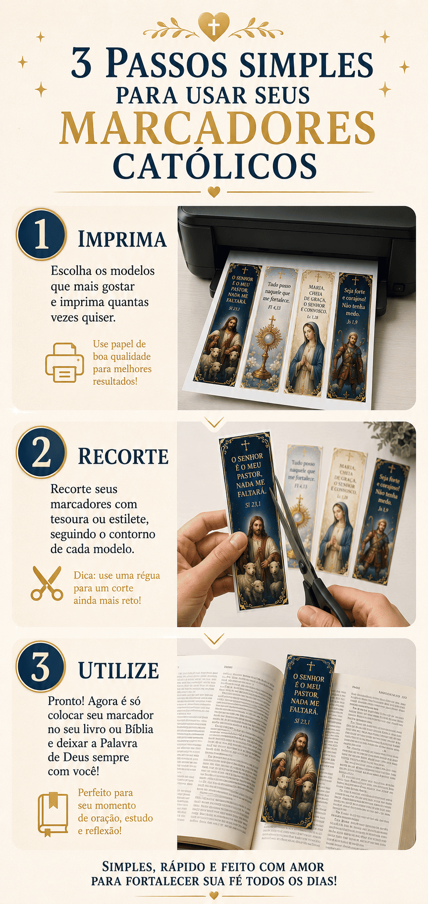
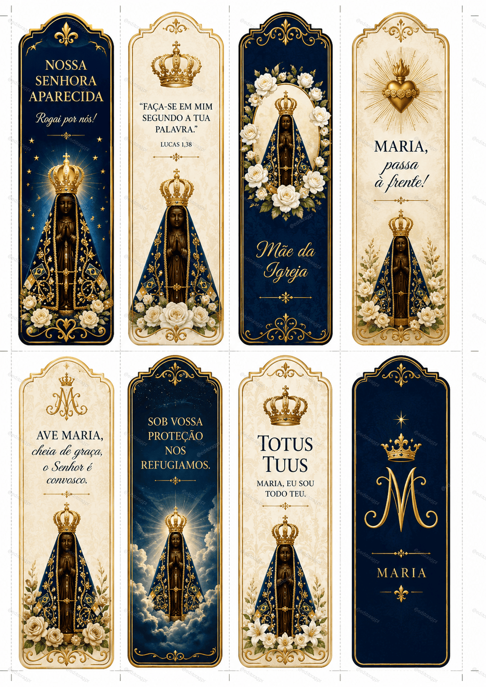
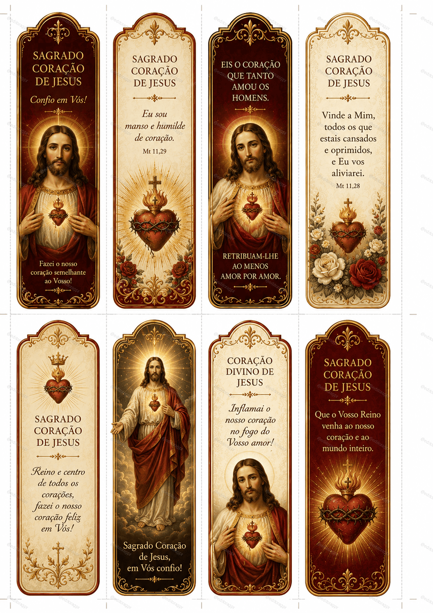
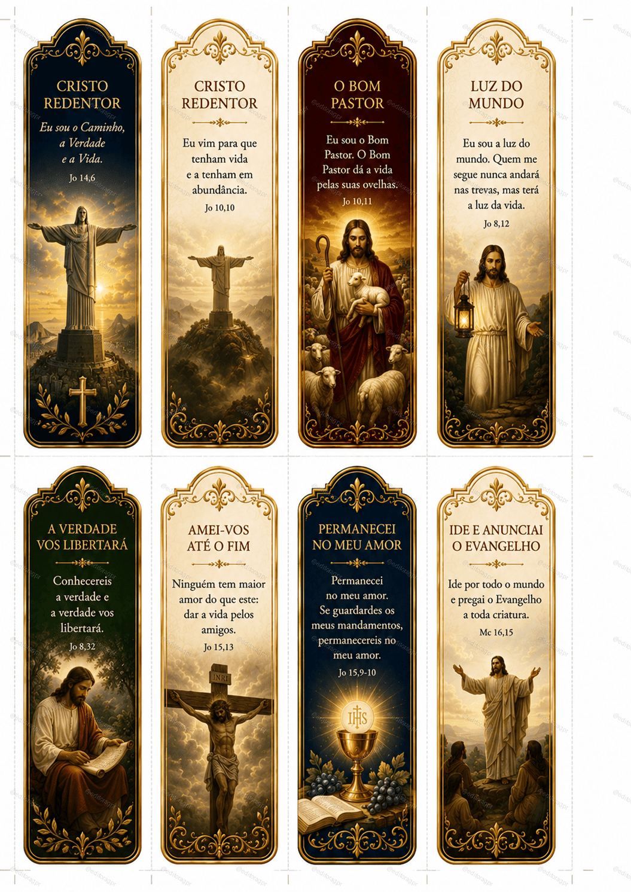
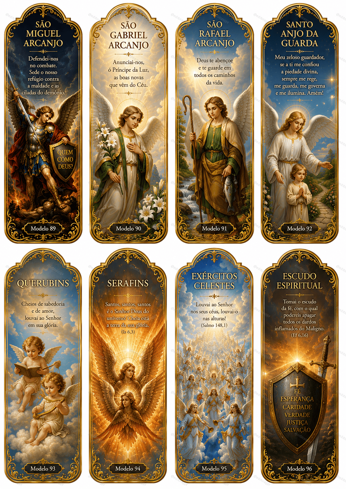
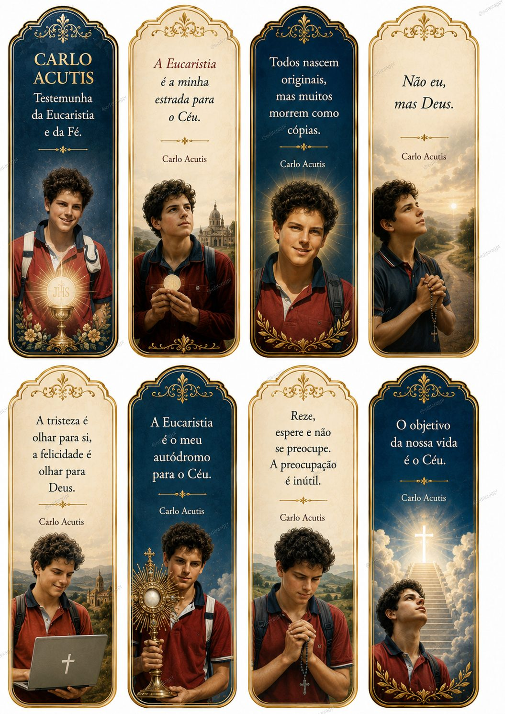
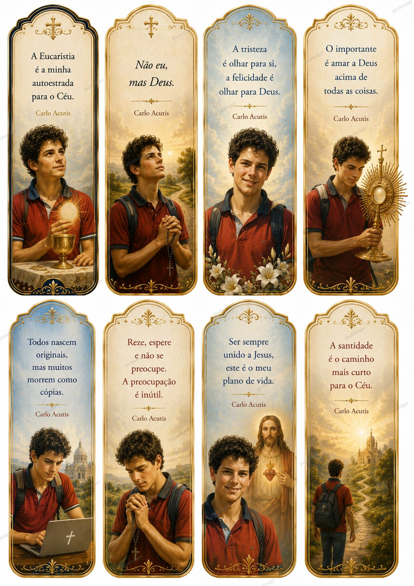
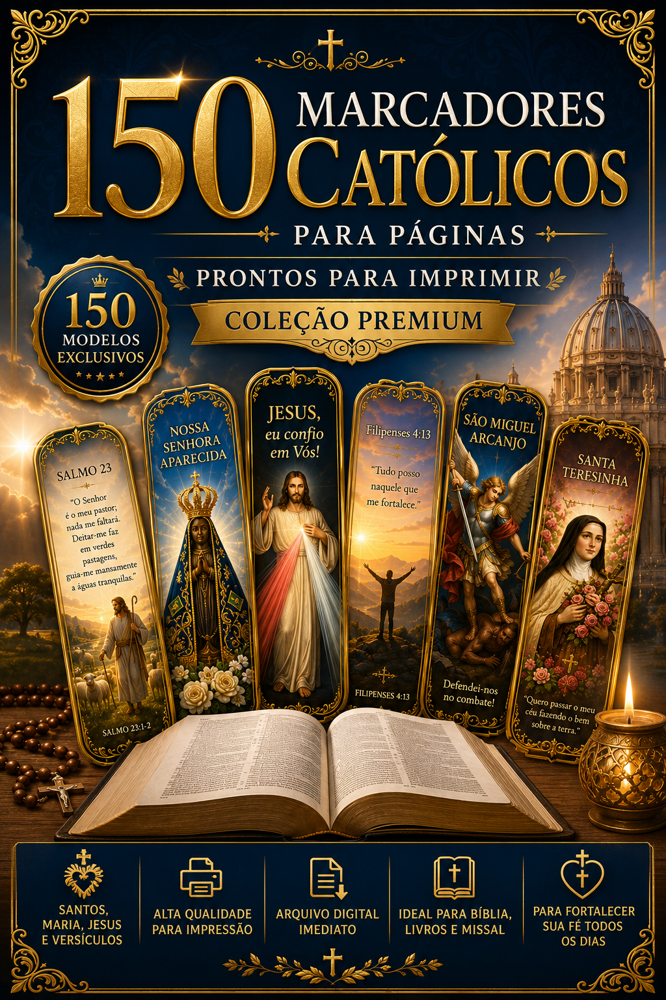

"Comprei para colocar na minha Bíblia e amei! As imagens são lindas, parecem santinhos antigos. Imprimi em papel fotográfico e ficou perfeito."
Marcadores premium de 5 x 15 cm com Maria, Jesus, santos, anjos e versículos — ideais para Bíblia, missal, livros e devocionais. Plano Premium leva +16 marcadores bônus.
Histórias reais de quem já está usando os marcadores na Bíblia e nos livros
"Comprei para colocar na minha Bíblia e amei! As imagens são lindas, parecem santinhos antigos. Imprimi em papel fotográfico e ficou perfeito."
"Recebi na hora por e-mail. Já imprimi vários para presentear minha mãe e minha sogra. Elas choraram de emoção. Vale muito a pena!"
"Sou catequista e usei como lembrancinha na crisma da turma. As crianças adoraram! A qualidade da impressão é impressionante."
"Mais de 150 modelos diferentes — tem para todo gosto. Maria, Jesus, santos, anjos, versículos… Uso um diferente em cada livro espiritual."
"Levei a super oferta. O guia de impressão me ajudou demais a acertar o papel e a gramatura. Os marcadores infantis foram um mimo lindo!"
"Imprimi, plastifiquei e dei de presente aos meus padrinhos de casamento. Ficaram emocionados. Material lindo e barato pelo que entrega."
Imprima, recorte e utilize. Em 3 passos seus marcadores estão prontos para acompanhar sua oração diária.

Um material pensado para acompanhar sua jornada espiritual todos os dias.
Marque versículos e capítulos com beleza e devoção em cada leitura.
Use como lembrancinha em crismas, primeiras comunhões e encontros.
Padrinhos, madrinhas, mães e amigos — um presente de fé que emociona.
Distribua marcadores lindos em retiros, missas e grupos de oração.
Ilustrações premium, cores vibrantes e detalhes em dourado. Cada marcador é uma verdadeira obra de arte sacra para acompanhar sua leitura.






Uma coleção completa para acompanhar toda a sua vida de oração.
TOTAL: 150 marcadores — prontos para imprimir, recortar e utilizar.
150 marcadores premium em alta qualidade + bônus exclusivos para imprimir, presentear e viver a fé todos os dias.

Coleção premium com 150 marcadores ilustrados (5 x 15 cm), em arquivo digital pronto para baixar, imprimir e utilizar onde quiser.
2 bônus normais + 2 bônus super premium
O passo a passo completo para imprimir seus marcadores com qualidade profissional: papel recomendado, gramatura ideal, plastificação, como recortar e dicas extras de cuidados.
16 marcadores especiais para crianças com ilustrações fofas e versículos das principais histórias da Bíblia: Arca de Noé, multiplicação dos pães, nascimento de Jesus e muito mais.
Mais de 700 páginas explicando, verso a verso, todos os 150 Salmos da Bíblia — em linguagem simples, didática e profunda. Perfeito para complementar seus marcadores e mergulhar na Palavra de Deus.
Uma seleção cuidadosa de mais de 100 músicas que tocam a alma — para rezar nos momentos difíceis, encontrar paz no meio do caos e sentir o abraço de Maria todos os dias.
⚠️ Ainda dá tempo de levar a melhor opção abaixo!
95% das pessoas escolhem a Super Oferta — leve os 4 bônus por apenas R$ 20 a mais.
150 Salmos Explicados Verso a Verso
+700 páginas — verso por verso
+100 Músicas Marianas e Católicas
+15 horas para rezar e meditar
Se nos próximos 7 dias você sentir que o material não é para você, basta nos enviar um e-mail e devolveremos 100% do seu investimento — sem perguntas, sem burocracia.
Acesso imediato. Garantia de 7 dias. 150 marcadores premium na sua Bíblia ainda hoje.
QUERO MEUS MARCADORES